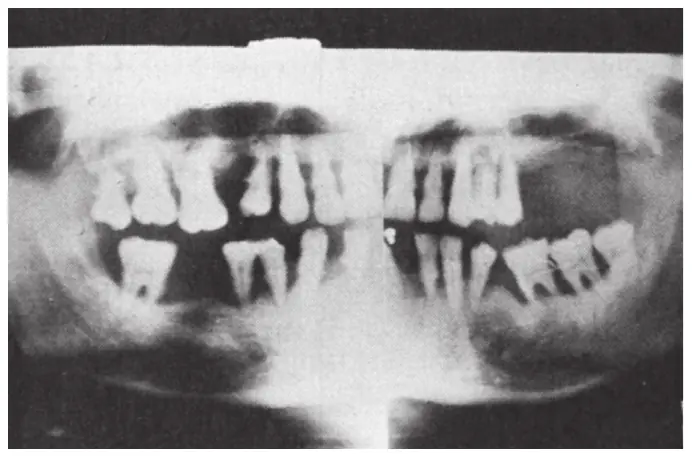
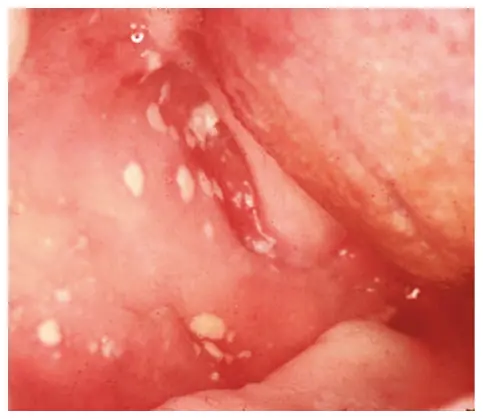

نسخه استخراجشده؛ ترجمه یا تأیید علمی انجام نشده است. وضعیت: captured
مرد ۲۸ سالهای با پریودنتیت شدید و پیشرونده و چند آبسهی پریودنتال آمده. سیگار نمیکشد و بهداشت دهانش هم خیلی بد نیست. پیش از برنامهی درمان به چه فکر میکنی؟

بیماری پریودنتال در هر دو نوع دیابت شایعتر و شدیدتر است و شدتش با میزان کنترل قند همراه است. قند بالا محصولات نهایی گلیکاسیون (AGE) میسازد که سایتوکاینهای التهابی بافت پریودنتال را بالا میبرند؛ التهاب سیستمیک خفیف و مزمن دیابت هم به آن اضافه میشود.
پایداری این کاهش HbA1c پس از ۶ ماه هنوز روشن نیست؛ پس درمان پریودنتال جای داروی دیابت را نمیگیرد. مراقبت منظم پریودنتال را بخشی از برنامهی درمان دیابت بدان و به بیمار هم همین را بگو.
زخم تروماتیک و ضایعات لیکنوئید هم در بیماران دیابتی بیشتر گزارش شده است.

اشتباه رایج: درمان پشتسرهم کاندیدیازیس عودکننده بدون پرسیدن از قند. عود مکرر عفونت قارچی خودش سرنخ کنترل بد دیابت است.